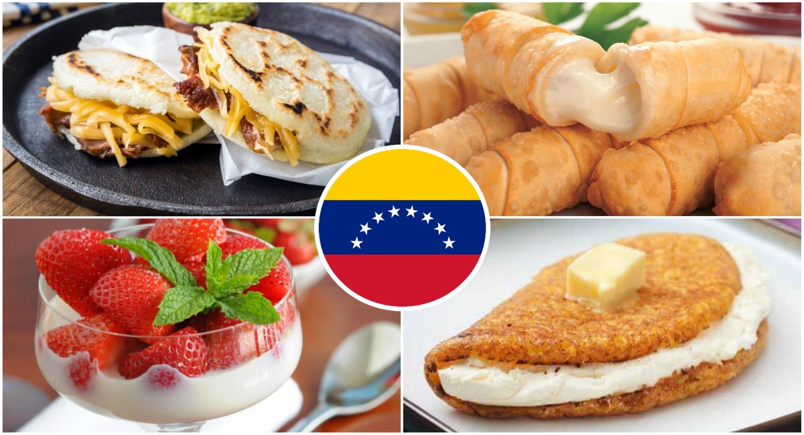
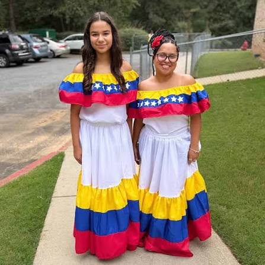
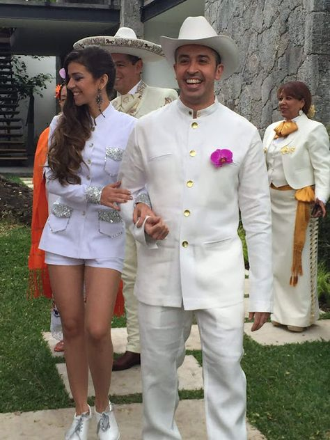
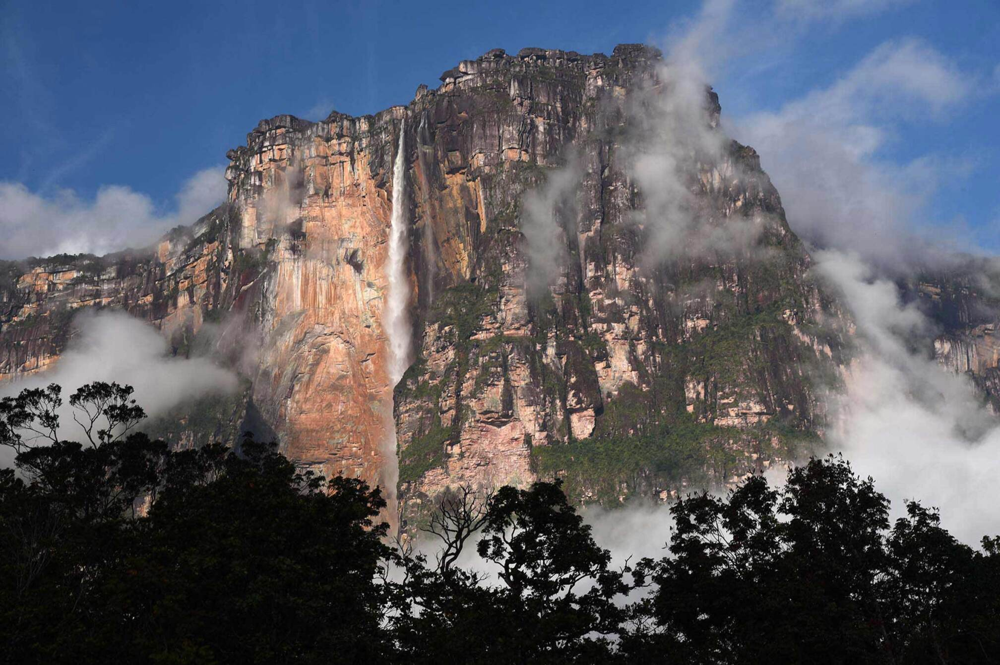
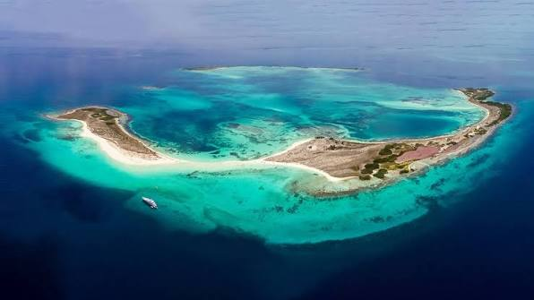
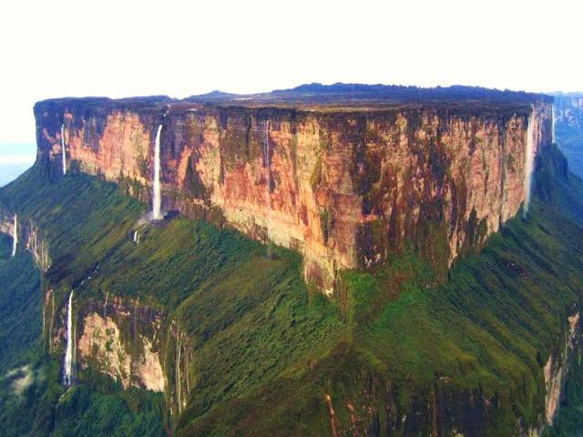

Venezuela, situada en el norte de América del Sur, es un país con una gran riqueza histórica, cultural y natural. Su historia comenzó con los pueblos indígenas y cambió con la llegada de los españoles. En 1811 declaró su independencia, con figuras destacadas como Simón Bolívar. Durante el siglo XX, el petróleo transformó su economía. Actualmente, Venezuela es conocida por sus tradiciones, su diversidad cultural y sus impresionantes paisajes naturales.


Vestimenta de la mujer:
La mujer suele llevar una blusa blanca o colorida,
una falda amplia y larga con estampados alegres, y
alpargatas. En ocasiones, adorna su cabello con flores
o cintas.Este traje se inspira en las prendas
tradicionales de las comunidades rurales y en las
influencias españolas, y permite lucir los movimientos
de la danza folklórica.

Vestimenta del hombre:
El hombre suele vestir el liqui liqui, un traje
tradicional compuesto por una chaqueta cerrada con
cuello alto, pantalón largo y alpargatas. Se
popularizó en el campo venezolano y se convirtió
en un símbolo de identidad nacional. Se utiliza
especialmente para bailar joropo, el baile
tradicional de los llanos venezolanos.
| Sitio | Descripción | Imagen |
|---|---|---|
| Salto Ángel | Es la cascada más alta del mundo y se encuentra en el Parque Nacional Canaima, en Venezuela. |
 |
| Los Roques | Es un archipiélago famoso por sus playas de arena blanca y sus aguas cristalinas. |
 |
| Monte Roraima | Es una montaña de cima plana con paisajes naturales únicos, situada en el Parque Nacional Canaima. |
 |
La gaita venezolana, nacida principalmente como gaita zuliana en el estado Zulia, es un género musical
producto de un mosaico pluriétnico que fusionó elementos indígenas, africanos y españoles a partir de
la época colonial. Originalmente ligada a la devoción religiosa y a cantos de protesta, evolucionó
durante los siglos XIX y XX hasta convertirse en el símbolo musical de la Navidad en toda Venezuela